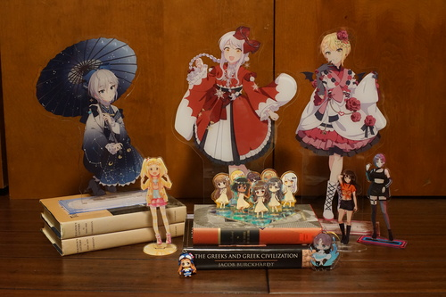

Big news everyone! I'm considering playing a game in February! Can you believe it? At this rate, I may finish it by February 2026!

A big package came and Ryan and I got to open some more Christmas presents! I got some true cuties~
This hanging Nina is very special! Back when I lived in Seattle circa 2015, one of my Touhou House friends had pulled Nina from a blind box. As an adult male, he was completely uninterested in her and either let me buy her off him or gave her to me.
I can't remember if Nina was my favorite IMAS CG character yet, but I had her hanging off my purse for a long time. She got pretty damaged from it and Ryan started calling her Nino.
One day I decided to go to Bellevue to visit Pink Gorilla for probably the first and last time before that location closed. While in Bellevue outside of Pink Gorilla, I noticed my Precious Nino was gone.
I searched everywhere I could, but I had traveled quite a distance by public transportation so there wasn't much hope. I was very upset my little Nino was gone forever ;_____;
Now after all this time, my little 2の is back!! I can't believe it!!! She will be protected this time. I won't lose her again.
Here's the full Christmas haul! Ryan got some big girls~
My favorite thing about pumpkins is that little animals will come by to munch them. I put my fall pumpkins outside a while ago and it didn't look like they were getting any attention. Upon closer inspection...
TWO (2) PUMPKINS have been NIBBLED
I can't believe it!!!!! Absolutely blessed. It looks like someone went and pooped inside one. Yuck!!!!
Gonna put this on my shelf so everyone will know I play forgniths
I like the illustration on the cover
My desperation is high enough I bought a 1x2
I don't actually intend to rip or listen to this one but the price is right to keep it for posterity. There was a ripped disc in the case and the disc for this one was doubled up in Enigma's case.
Excited for this bad boy. I've got their first 3 albums now.
Never heard of them.
Ryan's buy of the set. Comes with a DVD! I wanna watch!!!
Also not sure if I'll rip this one but I have more hope for it than Macklemore.
Blind purchase.
Blind purchase.
Do NOT tell Ryan I knowingly bought a second copy. IT WAS A MISTAKE. I DIDN'T KNOW.
The guitarist from Korn. What could possibly go wrong?? Omg I just found out it's a Christian album...